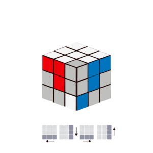
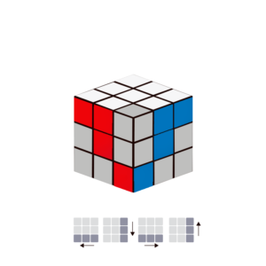
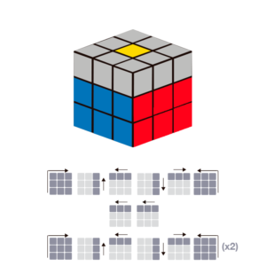
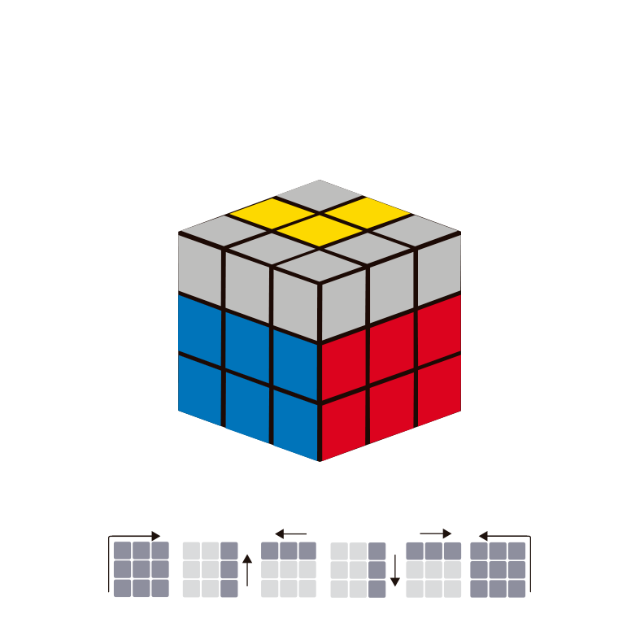
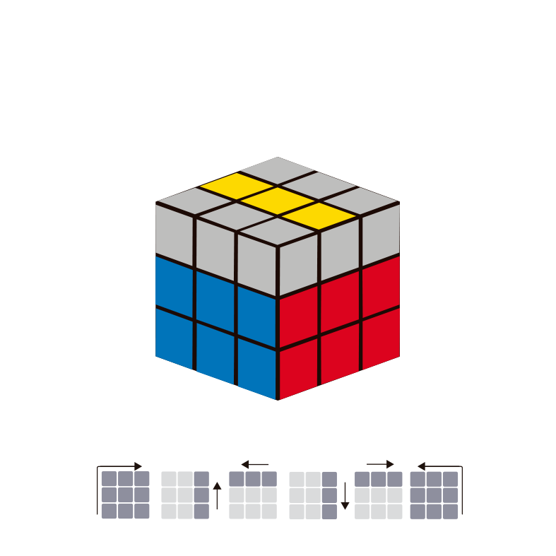
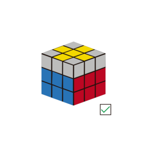
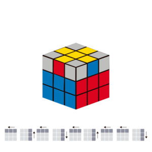
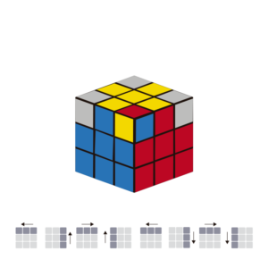
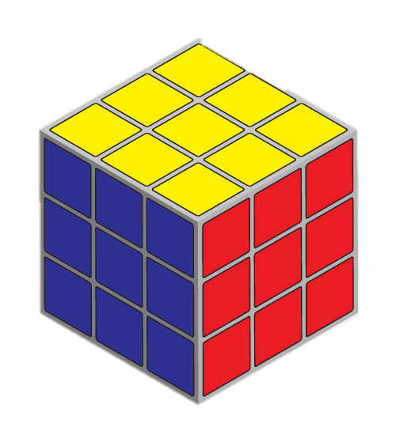

Primeramente se resuelve la cruz balnca junto a las aristas con el color correspondiente a los colores de los centros

Despues se acomodaran las esquinas de color blanco con el algoritmo
Despues de acomodar las esquinas de color blanco se colocan
las aristas que se encuentran entre la segunda y tercera capa utilizando los algoritmos siguientes. Cuando una arista va ser acomodada debe ser llevada al centro con el color predominante el cual es el que se encuentra justo de frente a las manos.

Despues de acomodar las aristas en su lugar se tiene que crear una cruz amarilla, inicialmete tendremos un punto elavorarenos el algortimo qu se muestra, al elavorarlos se conseguira la froma de una "L"

Una vez que la "L" esta en la parte de la cara amarilla despues se repite el algoritmo hasta que se encuentre una cruz, la cruz se coloca de manera horizontal y se aplica el algorimo hasta conseguir la cruz amarilla

Aqui se acomodan las aristas de la curz amarilla para poder acomodar las esquinas. Estas se deben acomodar poniendo una coinsidencia de color, esto significa que cuando tenemos la cruz amarilla esta tiene colores a sus bordes estas pueden tener una o dos coincidencias de color en conjunto de sus centros, esta coincidencia debe estar en el frente y al lado derecho, se aplica el algoritmo y se resolverán las demas aristas sin deshacer ls cruz amarilla.
Colocamos el cubo de manera en que encontremos una esquina que este con los tres colores que tiene con base a los centros, por ejemplo si tienes la esquina que tiene color rojo y azul, deben estar entre los centros del color rojo y auzl, no tiene que estar en acomodada del todo con que este entre los centros de sus centros correspondientes quedara bien. Despues de encontrar una arista en su lugar se aplica el algoritmo sobre la arista que esta bien y automaticamente se acomodaran las demas esquinas.

En esta parte se ordenan las esquinas con cuatro simples movimientos los cuales son: Abajo,Izquierda,Subo,Recupero. Este algoritmo se aplica hasta que el color amarillo este arriba, una vez que el algoritmo es aplicado en una columna no se debe realizar en otra que no sea esa.

¡EL CUBO YA ESTA LISTO!